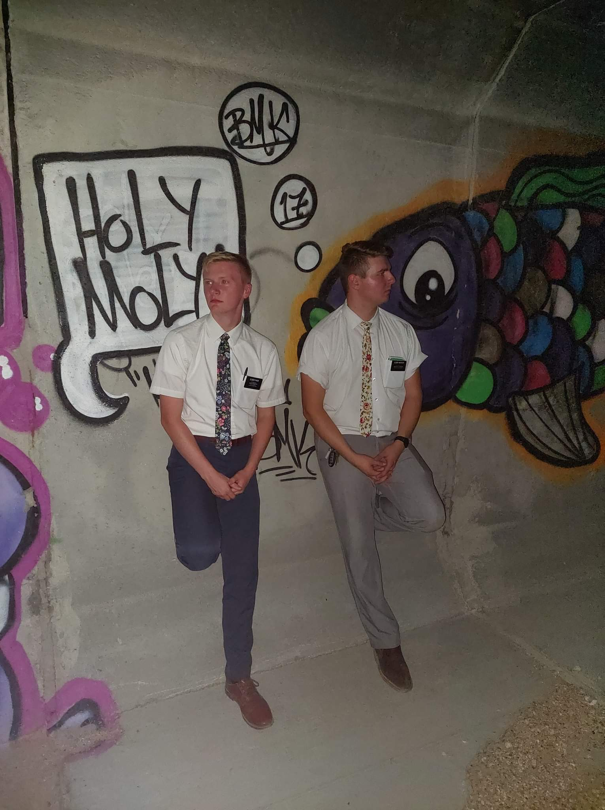

This website was designed and built for my WDD231 class. It showcases everything I learned in my Frontend Web Development class and different projects I have worked on. I hope you enjoy your time here and find the content useful and informative.